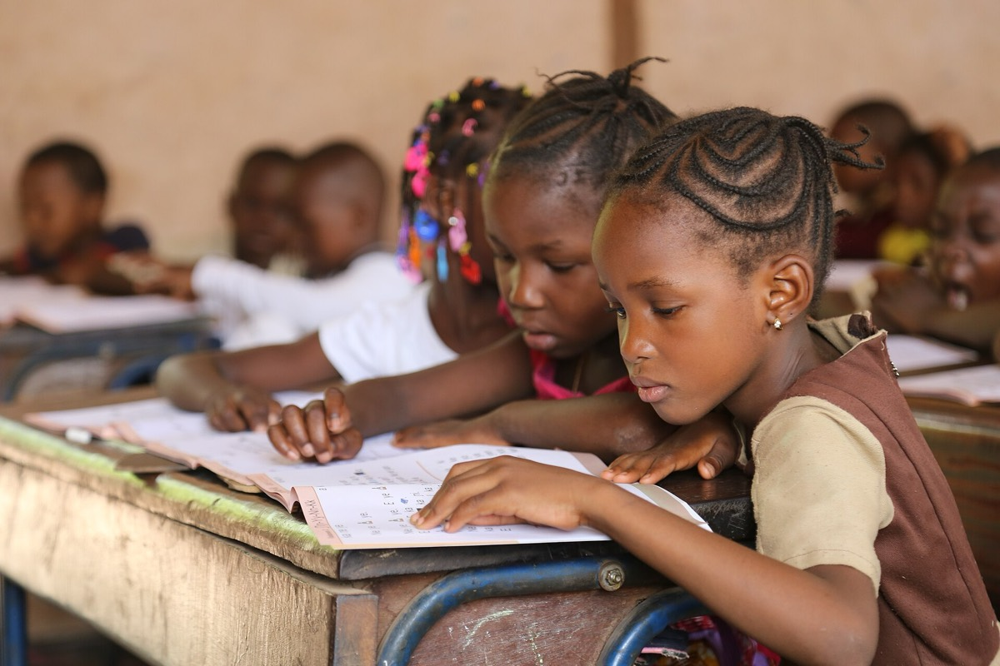
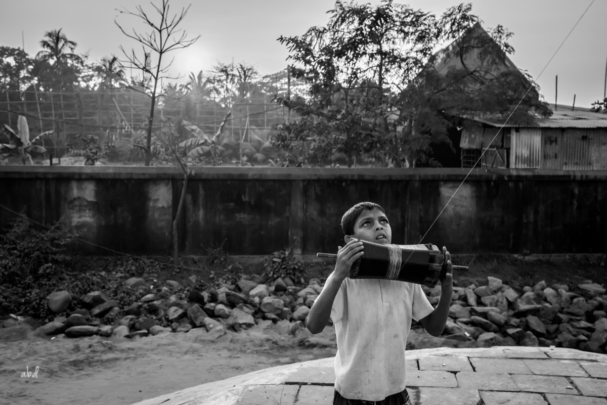
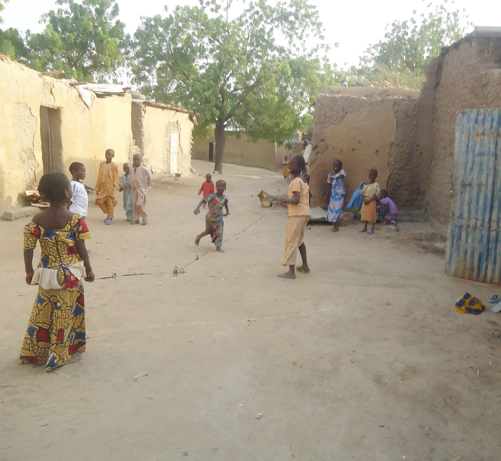
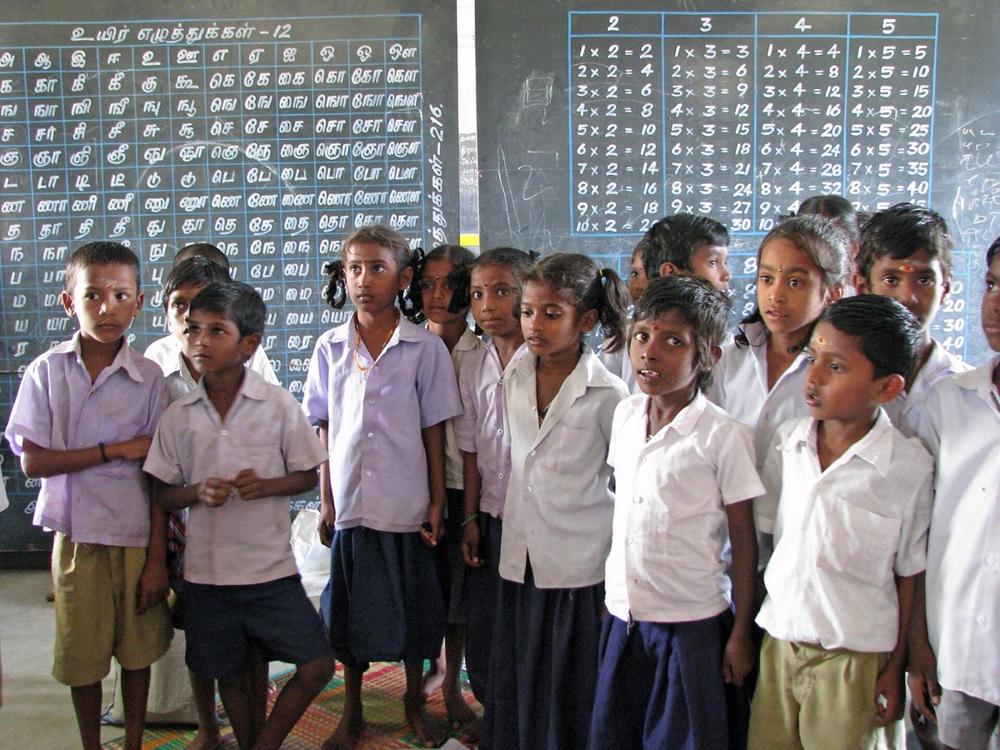
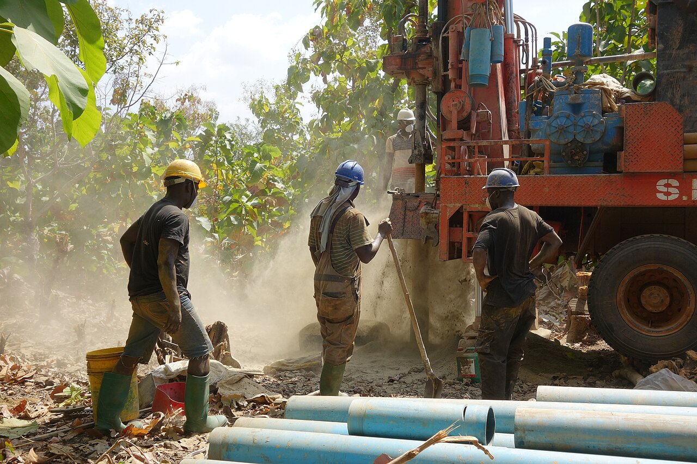
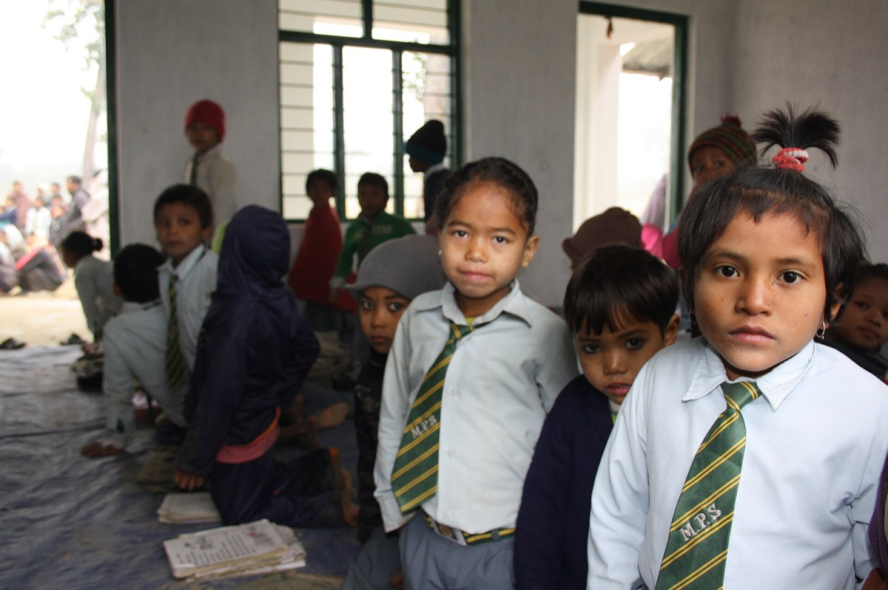

children rescued
GoodWeave reports that it and its associates have rescued more than 10,000 children from child labour and supported education for around 100,000 children. It also monitors licensed production sites.
Read the 2024 reportChild labour, poverty, hunger and missing school feed each other. Here are 29 trusted projects breaking that cycle, with links to their work, reported results and official websites.
Time to read, play and learn with friends. These are the moments child labour takes away, and the moments every project on this page is protecting.




When a family is poor, children often work to help. Working children miss school, so as adults they can only find low-paid jobs, and their own children face the same choice.
Cash transfers, livestock and job training mean parents can earn enough without their children's wages.
Groups find children in dangerous work, bring them to safety and check that factories stay child-labour free.
A free school meal gives families a strong reason to send children to class instead of work.
Books, teachers and support for girls help children finish school and find better jobs.
Every organization here works directly on the issue and takes donations on its own website. Search, filter by issue, and tap the heart to build your own shortlist.
These international days put a spotlight on each issue. Plan an assembly, poster drive or fundraiser around one, and link it to a project above.
Behind each project are people inspecting supply chains, supporting families, serving meals, building water systems and keeping children learning. The results below are reported by organizations; they are not guarantees for an individual donation.

GoodWeave reports that it and its associates have rescued more than 10,000 children from child labour and supported education for around 100,000 children. It also monitors licensed production sites.
Read the 2024 reportBRAC reports that around 312,000 ultra-poor families have graduated out of extreme poverty. Its Graduation work combines assets, coaching and pathways to income.
Read BRAC’s 2025 resultscharity: water describes a community hand-pump well built over a drilled, lined and quality-tested borehole with a local partner.
See the project record and well photosWFP reports direct support through school-meal take-home rations and cash-based transfers in 63 countries.
 Students in Dondon, Haiti. Photo: WFP/Alexis Masciarelli. Photo and programme story.Explore WFP school meal work
Students in Dondon, Haiti. Photo: WFP/Alexis Masciarelli. Photo and programme story.Explore WFP school meal workRoom to Read and Malala Fund focus on literacy, girls’ education and keeping students in school. Their pages share current programmes, locations and reporting.
See Room to Read’s impactFigures are organization-reported and cover different time periods and programmes. They are not directly comparable; each linked source defines its own measures.
Read the ILO and World Bank pages so you can explain the issue clearly.
Send it to friends and family, or present it in class or at an assembly.
Look for Fairtrade or GoodWeave labels, which check supply chains for child labour.
Hold a bake sale or sponsored walk, then give through an official donation page.
Small actions add up. Choose a project you care about, join the next awareness day, and share this page.
Browse all 29 projectsScams copy real charities. These habits make sure your money goes where you mean it to.
Helping Hands is my MYP Service as Action project. It followed the five stages of service learning.

Researched child labour and poverty using ILO and World Bank data, then chose four issues.
Shortlisted trusted charities (now 29) and planned the sections of the site.
Built the website, tested every donation link and shared it with others.
Collected feedback and thought about what I learned and what to improve.
Presented the site and added evidence to my portfolio.